Pokémon Battle Simulator
Choose, create, or randomize Pokemon and test your battling skills. CSC207 Team 4
github.com/aman-a-shah/pokemon-battler · (Backend) Java 17 + Spring Boot · (Frontend) React 19 + TypeScript
- Open on the product, not the tech: "we built a Pokémon tournament simulator."
- Everyone is on camera/mic before slide 2 — the rubric requires every member to speak.
- Press H for the key map, N for these notes, T to start the timer.
Introduction
Welcome to our project: Pokemon Battle Simulator!
Team user story: As a Pokémon fan, I want to explore official and custom Pokémon through battles and tournaments, so I can compare them in one app.
Data from PokéAPI
Every Pokémon, move, stats, and sprites comes from PokéAPI (1,300+ Pokémon)
Playable Battles
Turn by turn: choose a move or use an item. Speed decides who goes first and damage is based off of real formulae.
Tournaments Style Brackets
Seed eight Pokémon into a bracket and watch four quarterfinals, two semifinals and a final crown a champion.
Why we chose this idea
WE LOVE POKEMON!!
- Spend two minutes here. State the team user story, target user, and user-visible outcome.
- Focus only on what the product lets people do. Save APIs, classes, and frameworks for later slides.
Scope
Seven use cases, six people
| Use case | User story | Owner | What shipped |
|---|---|---|---|
| User Accounts | As a user, I want to log in. | Will Xu | Signup, login, three roles, invite codes, guest mode, Google sign-in, soft delete with 60-day restore |
| Trainer Panel | As a trainer, I want my own library, and admins to be able to inspect one. | Will Xu | Per-user library over HTTP, role-gated menu entries, admin and dev inspection |
| Pokédex | As a user, I want to see Pokémon stats and battle information in a library. | Aman Shah | Searchable Pokédex over live PokéAPI data, with stats, types and move pools |
| Single Battle | As a user, I want to battle a single Pokémon because I want to see which one is stronger. | Albert Wang | Turn resolution over HTTP: moves, items, damage, fainting |
| Tournament | As a Pokémon player, I want an eight-Pokémon knockout tournament that produces one champion. | Dorothy Zheng | Eight-entrant knockout bracket, hand-picked or randomly filled, rounds simulated in parallel |
| Build a Pokémon | As a user, I want to create my own Pokémon with custom stats and appearances. | Cindy Liu | Creation screen, validation, image upload, auto-added to your library |
| Battling with Custom Pokémon | As a user, I want the Pokémon I invented to be usable in a real battle. | Edison Cai | Owner-scoped custom Pokémon files, user-scoped API, sprite loading, battle-ready Pokemon entity |
Seven use cases, all shipped. Each of the six of us owns at least one distinct, substantial slice — a login system with roles, a cached catalog, a creation flow, a turn engine, a parallel tournament runner. Not six variations on one CRUD screen.
- Play the complete project walkthrough on this slide. It runs for about three minutes and covers the connected workflows before the individual architecture sections begin.
- The video is stored at
assets/project-demo.mp4, so playback does not depend on Google Drive or a laptop-specific path. - This slide is the Project Scope Cap slide. The cap is applied after the rubric subtotal, so this table is worth more than any single category.
- Point at the distinctness: roles & access control, catalog & caching, creation, turn engine, bracket runner. Not six variations on one CRUD screen.
- Rows are in use-case order, so this table previews the next six sections. Will has two use cases and presents them together.
- Owners confirmed by the team on 2026-08-08, and they match
PROJECT.md. The two story sentences without a blueprint quote — Trainer Panel and Battling with Custom Pokémon — were written to match the shipped behaviour.
Use cases 1 & 2 of 7 — User Accounts, Trainer Panel
Log in, and see only what you should
"As a user, I want to log in."
What the use case does
- Sign up, sign in, or continue as a guest
- Three roles —
PLAYER,ADMIN,DEVELOPER, with the two elevated ones behind invite codes - The main menu shows only the panels your role can reach
- Admins can soft-delete a user, and restore them for 60 days
- Passwords hashed with PBKDF2, 100,000 iterations, per-user salt
Two SOLID principles, in this code
- Interface segregation.
FileUserDataAccessimplements four interfaces, one per use case — signup, login, manage users, library — of one or two methods each. Login can read a user and nothing else: nosave, noupdate. - Dependency inversion. All four live in
use_case/anddata_access/implements them.CompositeLibraryUserDataAccessarrived later as a second implementation and no interactor changed.
Access policy in the use case layer Soft delete Composition root
- Sign up as a plain
PLAYER - Menu shows only the panels that role can reach
- Add one from the Pokédex, and the trainer panel holds it
- Sign up again with the
developerinvite code, and Dev Tools appears - Sign in with Google as an existing admin, and the Admin Panel appears
Same screen, same code path, different role. One entry appears and nothing else moves.
- Do not read the slide. Reading from notes caps this at 3/5 on Verbal Presentation.
- Land the moment the menu changes shape: same screen, different role, different panels.
- Have the invite-code path ready; it is the detail that shows this is more than a form.
- If asked who else depends on these interfaces:
LibraryUserDataAccessInterfaceis used byViewLibraryInteractor,RemoveFromLibraryInteractorand by Cindy'sCreatePokemonInteractor, which needs an owner and nothing else. Another member's use case consuming the abstraction without widening it is the segregation working.
Interactor & class diagram
Access is decided by a policy, not by a screen
public class AddToLibraryInteractor implements AddToLibraryInputBoundary {
private final LibraryDataAccessInterface libraryDataAccess;
private final LibraryUserDataAccessInterface userDataAccess;
private final LibraryAccessPolicy accessPolicy;
// ... constructor injects all three abstractions ...
@Override
public AddToLibraryOutputData add(AddToLibraryInputData inputData) {
AddToLibraryOutputData outcome;
final Pokemon pokemon = inputData.getPokemon();
if (pokemon == null || pokemon.getName() == null
|| pokemon.getName().isBlank()) {
outcome = new AddToLibraryOutputData(false,
"Pokemon name cannot be empty.", LibraryFailure.INVALID_INPUT);
}
else {
try {
outcome = save(inputData, pokemon);
}
catch (UserDataAccessException exception) {
outcome = new AddToLibraryOutputData(false,
exception.getMessage(), LibraryFailure.STORAGE_ERROR);
}
}
return outcome;
}
private AddToLibraryOutputData save(AddToLibraryInputData inputData, Pokemon pokemon)
throws UserDataAccessException {
final AddToLibraryOutputData outcome;
final User requester = userDataAccess.getByUsername(inputData.getRequesterUsername());
final LibraryFailure refusal = accessPolicy.decide(requester, inputData.getOwnerUsername());
// ... alreadyThere: the owner's library already holds this name ...
if (refusal != null) {
outcome = new AddToLibraryOutputData(false,
"You are not allowed to modify this library.", refusal);
}
else if (alreadyThere) {
outcome = new AddToLibraryOutputData(false,
pokemon.getName() + " is already in this library.",
LibraryFailure.ALREADY_PRESENT);
}
else {
if (inputData.getEntryKind() == LibraryEntryKind.CUSTOM_REFERENCE) {
libraryDataAccess.saveCustomReference(inputData.getOwnerUsername(), pokemon.getName());
}
else {
libraryDataAccess.saveEntry(inputData.getOwnerUsername(), pokemon);
}
outcome = new AddToLibraryOutputData(true,
pokemon.getName() + " added to library.");
}
return outcome;
}
}The line that matters
The interactor never asks "is this user an admin?". It asks a
LibraryAccessPolicy to decide. Change who may edit whose library
and you change one class — no screen, no controller, no interactor.
Class diagram — the full Add to Library use case
Green is the use case layer: the boundary and interactor sit in use_case/add_to_library/, the policy and the two interfaces are shared abstractions at use_case/. The composition root injects CompositeLibraryUserDataAccess, which decorates the file store with the browser-identity projection — a second implementation the interactor never learns about.
- Highlighted block is the point: policy object, not an if-chain.
- Note the arrow that points up: the data access interfaces live in
use_case/, anddata_access/implements them. That is Dependency Inversion, and it is the clearest single piece of evidence we have for the Dependency Rule. - Failures are a
LibraryFailureenum, not HTTP codes — the use case does not know the web exists.
Use case 3 of 7 — Pokédex
Every Pokémon, searchable, with its real stats
"As a user, I want to be able to see Pokémon stats and battle information in a library."
What the use case does
- Loads all ~1,300 Pokémon — every form PokéAPI knows — live, in 19 requests
- Search by name or dex number (
"15"finds #150); type-chip filters that can never produce an empty grid - Detail page: stat bars against the real 255 ceiling, moves, flavour text — and weaknesses computed from the type chart, not stored
- Grid pages 120 cards at a time and says how many matches remain — no keystroke hitch
- Add to your library from the detail view; owned entries are marked
Terminology worth landing
Pure use case layer Two-tier entity Hook as interface adapter Decorator hook Humble views
- Open the Pokédex from the menu
- Search and filter by type
- Detail view with real stat bars
- Save one to the library
- Filter by type live; it is the fastest way to show the data is real, not a fixture.
- The 19-requests number is worth saying: one list call plus the 18
/typeendpoints colours in the whole grid, instead of 1,300 per-Pokémon lookups. - Weaknesses are computed from
domain/typeChart.ts— the same table the battle engine uses. One source of truth for type effectiveness. - Mention the retro GBA styling briefly; the rubric rewards visuals, but don't dwell.
- Two more Aman slides follow — keep this one under 90 seconds.
Use case & class diagram
The use case layer is pure functions — and that is the design
// Pokédex use cases — pure functions over species data, no React, no storage.
// A numeric query matches on dex number prefix, so "15" finds #150.
export function searchSpecies<T extends SpeciesSummary>(
entries: T[], query: string,
): T[] {
const trimmed = query.trim().toLowerCase();
if (!trimmed) return entries;
if (/^\d+$/.test(trimmed)) {
// cards show "#006" zero-padded — strip zeros; all-zero matches nothing
const significant = trimmed.replace(/^0+/, "");
if (!significant) return [];
return entries.filter((s) => String(s.dexNumber).startsWith(significant));
}
return entries.filter((s) => s.name.toLowerCase().includes(trimmed));
}
// the whole pipeline: visibleSpecies = filterByTypes(searchSpecies(…), types)What purity buys, measurably
98 tests across the slice, layered like the code. The inner two layers carry 35 tests with zero mocks — the zero-padding branch on the left is the kind of edge case that only gets pinned when testing costs nothing. The hook's 21 tests mock exactly one seam — the service module — and the views' 42 tests assert behaviour, never pixels.
Full use case, layer by layer
Grid · Card · Detail · StatBar
useLibraryPokedex
search · filter · toLibraryPokemon
weaknessesOf · typeChart
Three of the five SOLID letters, in this one file
- S —
searchSpeciesknows nothing about React, fetching, or why anyone is browsing. Its one reason to change: what "matching" means. - L — every function is generic over
T extends SpeciesSummary, so the full dex page substitutes wherever a summary is expected. - I —
SpeciesSummaryis interface segregation as an entity: exactly the four fields a grid tile renders, so browsing never depends on the ten-request detail page.
O and D live in the architecture, not one file — next slide.
- The claim to land: the dependency rule needs no framework to enforce it. The inner two layers are plain TypeScript; React appears only in the hook and the components.
- If asked where 98 comes from: 10 in
domain/__tests__/pokedex, 25 inusecases/__tests__/pokedex(the zero-mock 35), 15 + 6 in the two hook test files (vi.mockofservices/pokedexApiis the single seam), and 42 across the six view test files. - The generic
T extends SpeciesSummaryis the two-tier entity design:SpeciesSummaryis what a grid tile shows,PokemonSpeciesextends it with the full dex page — they load on different schedules, but one implementation of search/filter serves both tiers. weaknessesOfreads the sametypeChartthe battle engine uses — the dex page and the damage formula cannot disagree about what beats what.- The wrinkle is now fixed, so do not volunteer it as a gap.
usecases/pokedex.tsused to take a type-only import fromservices/library.ts;LibraryPokemonmoved intodomain/in PR #40, andfrontend/src/__tests__/architecture.test.tsnow fails the build if anything inusecases/imports an adapter again. Worth saying that instead: we found it, moved the type, and pinned it with a test.
Full use-case class diagram
Pokédex dependencies move from React toward pure rules.
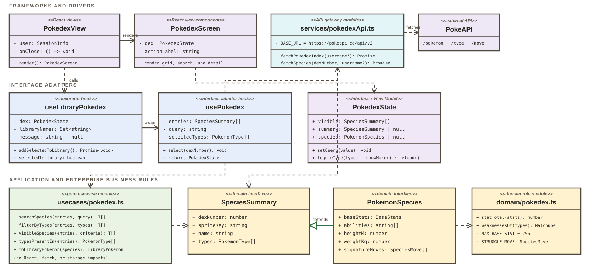
- This is credit for invisible work — say it in one breath, don't lecture. 75–90 seconds.
- The decorator card is the frontend mirror of Cindy's slide: her interactor composes
Will's through a boundary;
useLibraryPokedexcomposesusePokedexthe same way. Draw that parallel out loud. - Credit Albert by name for
ports.ts— the commit history says it is his, and crediting a teammate while naming your own violation reads as confidence, not weakness. - If asked "who decided the frontend architecture": the first four frontend commits in the git history are the answer — scaffold, domain types, components, hook — in that order, July 11–14.
- If pressed on the direct service call: the module seam is real (the hook tests mock it and
pass), so the missing port cost us nothing in testability — it costs us swap-at-runtime, which
nothing needed yet. Then say the fix: a
PokedexGatewayinusecases/, about twenty lines. - Hand off to Edison by asking "so where does all this data actually come from?"
Use case 4 of 7 — Single Battle
A battle you actually play
"As a user, I want to battle a single Pokémon because I want to see which one is stronger."
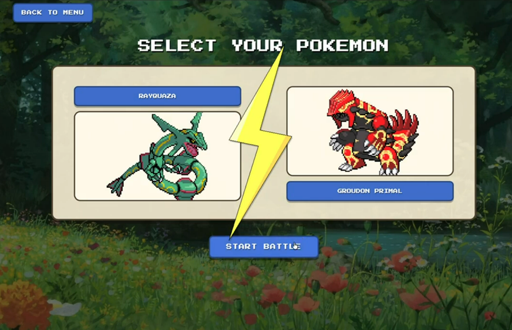
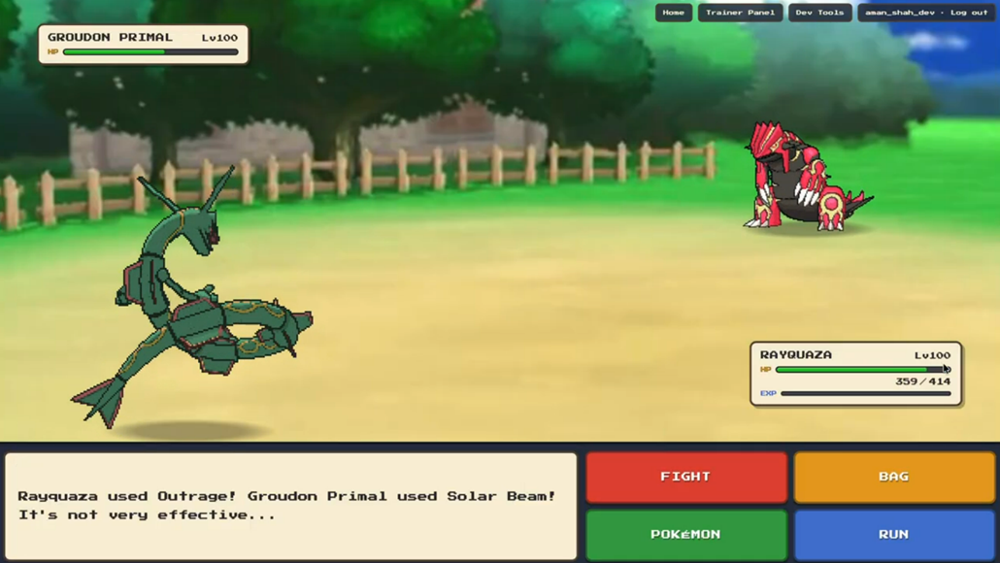
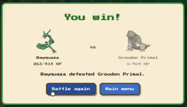
What the use case does
- Choose a move; speed decides who strikes first, with a coin flip on a tie
- Damage =
floor(power × atk / def × STAB × type × crit), over the full 18-type chart - Accuracy rolls, and a 1-in-24 critical hit at 1.5×
- Use an item — one that would do nothing is refused rather than consumed
- A faint ends the battle
Built, not demoed: parties and
SwitchPokemon are real and tested, but every shipped route builds a party of
one. Enabling it is a setup-screen change — no entity, interactor or
endpoint.
Terminology worth landing
Stateless endpoint Dependency injection of randomness Strategy Open/closed Immutable value object
- The project walkthrough on slide 3 shows the battle workflow. Use this slide to explain the rules and architecture instead of replaying the same workflow.
- Every turn shown there is a real round trip to the Java backend. State this once so the audience understands the backend's role.
- If asked to see a refused item live: it cannot be shown. The interactor refuses without consuming, and that is tested, but the bag disables the only valid target for a stat booster, so the action can never be submitted from the UI.
- Do not narrate switching. The shipped screen is a 1v1 and cannot show it. If it comes up in Q&A: the party model and the switch use case exist and are tested, the setup screen just never builds a party bigger than one.
Use Case Interactor and full use-case class diagram
The Interactor orders the turn. Source-code dependencies point in.
public class ResolveTurnInteractor
implements ResolveTurnInputBoundary {
private final OpponentMoveSelector
opponentMoveSelector;
private final BattleSimulator
battleSimulator;
private final Random tieBreaker;
public ResolveTurnOutputData resolve(
ResolveTurnInputData inputData) {
final Battle battle = inputData.getBattle();
final Move playerMove =
battle.getPlayer().getMoves().stream()
.filter(move -> move.getName()
.equalsIgnoreCase(
inputData.getPlayerMoveName()))
.findFirst()
.orElse(null);
final ResolveTurnOutputData outcome;
if (battle.isComplete()) {
outcome = new ResolveTurnOutputData(
false, null,
"Battle is already complete.");
} else if (playerMove == null) {
outcome = new ResolveTurnOutputData(
false, null,
"Player does not know move.");
} else {
outcome = new ResolveTurnOutputData(true,
new TurnResult(
exchangeBlows(battle, playerMove),
battle),
"Turn resolved.");
}
return outcome; // one explicit exit
}
}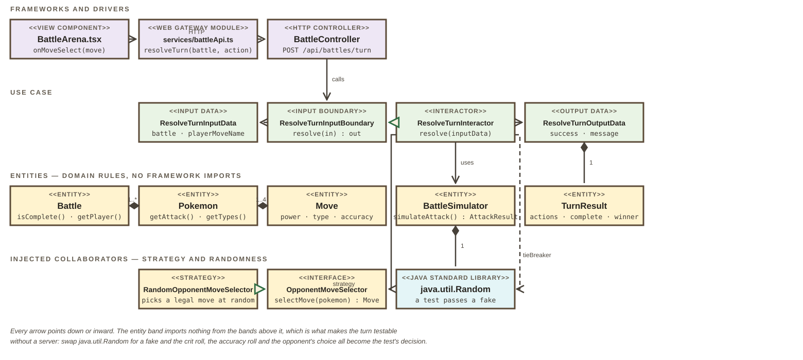
Dependency Inversion, in one arrow
BattleController depends on ResolveTurnInputBoundary, never on
the Interactor. The Interactor realizes that boundary, so the source-code
dependency points opposite to the direction of the call — outward control, inward
dependencies.
- Highlights in order: injected fields, speed tie coin flip, skipped action. One sentence each.
- Trace the diagram left to right, then say the Dependency Inversion line on the card. One principle, stated precisely — do not list four.
- Q&A: randomness is injected, not a seed. Stateless costs a battle on
refresh, buys a restart-safe API. Code is condensed; the file is
use_case/resolve_turn/.
Use case 5 of 7 - Tournament
A complete tournament, from setup to champion.
"As a Pokemon player, I want to run an eight-Pokemon knockout tournament so that I can watch four quarterfinals, two semifinals, and one final produce a champion."

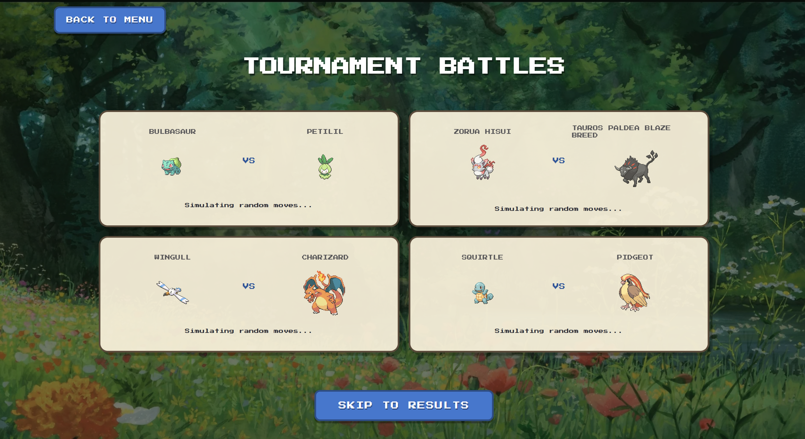

- Use the rubric's words out loud: identify the before view, the four-panel during view, and the populated after view.
- Point out that the player controls bracket order, while open slots are random. The three screenshots show setup, concurrent quarterfinals, and the completed bracket.
- Let the populated bracket and champion remain visible long enough for the grader to see the complete 8-4-2-1 progression.
Use Case Interactor
One Interactor coordinates a round. Domain objects protect the rules.
public class RunTournamentRoundInteractor
implements RunTournamentRoundInputBoundary {
private final RunTournamentRoundOutputBoundary presenter;
private final TournamentDataAccessInterface tournamentDataAccess;
private final TournamentPokemonDataAccessInterface pokemonDataAccess;
private final TournamentIdGenerator idGenerator;
private final TournamentMatchRunner matchRunner;
private final Executor executor;
public void execute(RunTournamentRoundInputData inputData) {
try {
Tournament tournament = resolveTournament(inputData);
if (tournament != null && !tournament.isComplete()) {
runNextRound(tournament);
}
} catch (PokemonNotFoundException exception) {
presenter.prepareFailView(exception.getMessage(),
TournamentFailure.NOT_FOUND);
} // Other data and simulation failures map to typed failures.
}
private void runNextRound(Tournament tournament) {
List<TournamentMatch> matches =
runMatches(tournament.getCurrentEntrants());
TournamentRound round = new TournamentRound(
tournament.getNextRoundNumber(), matches);
tournament.recordRound(round); // Entity validates bracket order
tournamentDataAccess.save(tournament);
presenter.prepareSuccessView(
new RunTournamentRoundOutputData(tournament, round,
outcomeMessage(tournament, round)));
}
private List<TournamentMatch> runMatches(...) {
// Inside the adjacent-pair loop:
matchTasks.add(CompletableFuture.supplyAsync(
() -> matchRunner.run(firstPokemon, secondPokemon),
executor));
return matchTasks.stream()
.map(CompletableFuture::join).toList();
}
}Application rule vs. enterprise rule
The Interactor coordinates loading, parallel execution, persistence, and output. The
Tournament aggregate enforces exactly eight entrants, 4-2-1 round sizes,
round order, matchup order, and one champion.
SOLID and Strategy
SRP: orchestration, bracket rules, one-match simulation, storage, and
formatting have different classes. OCP + DIP: the Interactor depends on
the TournamentMatchRunner abstraction, not RandomBattleRunner.
Reuse instead of duplication
RandomBattleRunner creates a fresh Battle and calls Albert's
ResolveTurnInputBoundary until there is a winner. Tournament code never
reimplements speed, accuracy, damage, fainting, or type-effectiveness rules.
Deterministic tests
Tests inject a fake match Strategy, fake repositories, a recording Output Boundary, and
Runnable::run as the Executor. No server, PokeAPI request, thread race, or UI
is needed to test the Interactor.
- Three highlights: the Strategy field, the entity validating
round progression, and parallel match execution on an injected
Executor. RandomBattleRunnerreusesResolveTurnInputBoundary— Albert's turn engine, through its interface. The tournament did not reimplement one line of battle logic.- If asked why the
Executoris injected: same reason asRandom— a test passes a same-thread executor and the whole thing becomes deterministic.
Clean Architecture and SOLID
Tournament Architecture
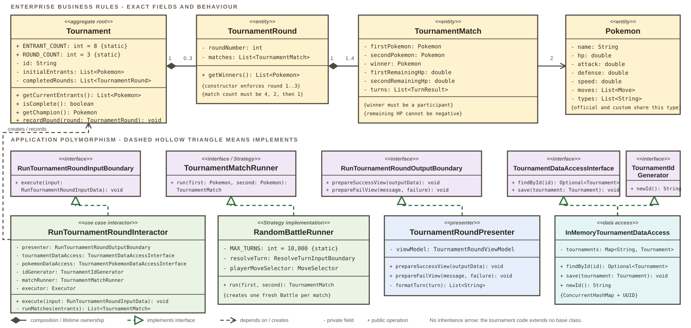
- Use the course summary: four layers, one rule. From outside inward, the tournament uses Frameworks and Drivers, Interface Adapters, Application Business Rules, and Entities. Source-code dependencies point inward.
- Frameworks include React, HTTP, Spring configuration, and the Java
Executor. Interface Adapters include the tournament controllers, Presenter, and View Models. RunTournamentRoundInteractoris an Application Business Rule.Tournament,TournamentRound, andTournamentMatchare Entities that enforce bracket order and valid winners.- Single Responsibility: the Interactor coordinates one round, the Entity
validates tournament state, and
RandomBattleRunnerruns one match. - Dependency Inversion: the Interactor names use-case interfaces such as
TournamentMatchRunnerandTournamentDataAccessInterface. Outer-layer implementations are injected byTournamentConfiguration.
Design patterns and package structure
Tournament Design
backend/src/main/java/
├── app/config/
│ └── TournamentConfiguration.java
├── app/web/
│ └── TournamentController.java
├── interface_adapter/tournament/
│ ├── TournamentRoundController.java
│ └── TournamentRoundPresenter.java
├── use_case/tournament/
│ ├── RunTournamentRoundInteractor.java
│ ├── TournamentMatchRunner.java
│ └── RandomBattleRunner.java
├── use_case/resolve_turn/
│ └── ResolveTurnInputBoundary.java
├── entity/
│ ├── Tournament.java
│ ├── TournamentRound.java
│ ├── TournamentMatch.java
│ └── Battle.java
└── data_access/
├── InMemoryTournamentDataAccess.java
└── TournamentPokemonDataAccess.java- Strategy:
TournamentMatchRunnerdefines how one matchup runs.RandomBattleRunneris the production Strategy, while tests can substitute a deterministic runner without changing the Interactor. - Dependency Injection:
TournamentConfigurationsupplies the match runner, repositories, Presenter, and four-threadExecutorService. RandomBattleRunnercalls Albert'sResolveTurnInputBoundaryinstead of copying battle rules. It creates a freshBattleper matchup, which resets HP and battle state between tournament rounds.- The Interactor submits match Strategies with
CompletableFuture.supplyAsyncand joins every result before recording the round.
Use case 6 of 7 — Build a Pokémon
Invent a Pokémon that never existed
"As a user, I want to be able to create my own Pokémon with custom stats and appearances."
public class CreatePokemonInteractor implements CreatePokemonInputBoundary {
// Five boundaries and repositories are constructor-injected.
private final AddToLibraryInputBoundary addToLibraryInteractor;
private final LibraryUserDataAccessInterface userDataAccess;
public void execute(CreatePokemonInputData inputData) {
final String rejection = rejectionFor(inputData);
if (rejection != null) {
presenter.prepareFailView(rejection, CreatePokemonFailure.INVALID_INPUT);
} else {
create(inputData);
}
}
private void create(CreatePokemonInputData inputData) {
ensureOwnerExists(inputData.getUsername()); // account projection
Pokemon pokemon = new Pokemon(inputData.getName().trim(),
inputData.getStats(), orEmpty(inputData.getMoves()),
orEmpty(inputData.getTypes()), savedSprites(inputData), List.of());
customPokemonRepository.savePokemon(inputData.getUsername(), pokemon);
AddToLibraryOutputData libraryOutput = addToLibraryInteractor.add(
new AddToLibraryInputData(inputData.getUsername(),
inputData.getUsername(), pokemon,
LibraryEntryKind.CUSTOM_REFERENCE));
if (!libraryOutput.isSuccess()) {
customPokemonRepository.deletePokemon(inputData.getUsername(), pokemon.getName());
} // Failure rolls back the custom-Pokemon save.
}
}Full use case, layer by layer
PokemonForm
CreatePokemonController
InputBoundary
- Lead with the composition point; it is the most sophisticated thing on this slide and it is genuine Clean Architecture, not decoration.
- Presenter is a real output boundary: the interactor returns
voidand pushes throughprepareSuccessView/prepareFailView. Name that pattern. - If asked about
InMemoryCustomPokemonRepository: yes, it is in memory, and it is behind an interface precisely so it can stop being.
Use case 6 of 7 — Build a Pokémon
Invent a Pokémon that never existed--UML Diagram
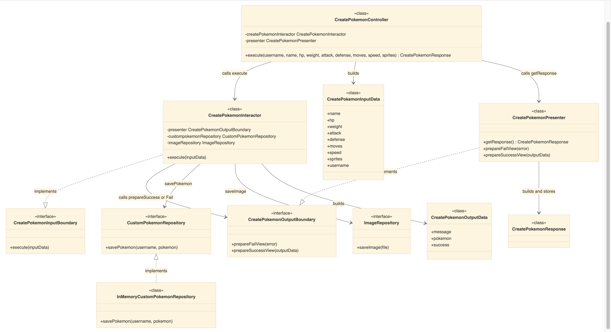
- Lead with the composition point; it is the most sophisticated thing on this slide and it is genuine Clean Architecture, not decoration.
- Presenter is a real output boundary: the interactor returns
voidand pushes throughprepareSuccessView/prepareFailView. Name that pattern. - If asked about
InMemoryCustomPokemonRepository: yes, it is in memory, and it is behind an interface precisely so it can stop being.
Use case 7 of 7 — Battling with Custom Pokémon
The Pokémon you invented, in a real fight
"As a user, I want the Pokémon I invented to be usable in a real battle."
What the use case does
- Persists a custom Pokémon under its owner's backend files
- Stores uploaded artwork through an
ImageRepository, separate from Pokémon data - Serves the Pokémon and its sprite back through a user-scoped API
- Returns the same
Pokemonentity the battle engine already takes, so a custom entrant fights exactly like an official one
Backend path, simplified
SingleBattleSetup
SpriteInteractor
ImageRepository
Demonstration path
Select an owner-scoped custom Pokemon and use its uploaded sprite in battle.
- This section picks up exactly where Cindy's leaves off — she creates it, you fight with it. Say that hand-off out loud; it makes two slices read as one product.
- Keep this backend-focused: owner-specific files, repository interfaces, the API endpoint,
and the fact that the final object is still a normal
Pokemonentity. - Use the backend path to name the Clean Architecture flow quickly: View, Controller, Interactor, Entity, and Data Access Interface.
- The catalog and cache work is also yours, but do not let it take over this section. Your individual story is custom Pokémon becoming battle-ready.
Detailed UML class diagram
The classes expose the rules. The interfaces expose the seams.
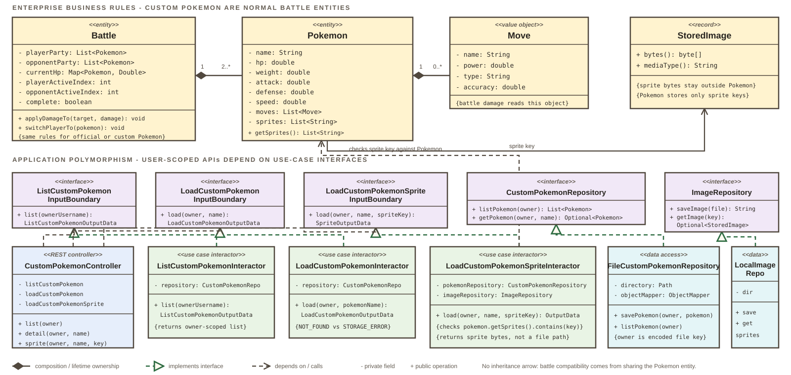
SRP
Sprite loading, Pokémon storage, battle rules, and HTTP response formatting live in separate classes.
DIP
Custom Pokémon interactors depend on CustomPokemonRepository and
ImageRepository interfaces, not file storage, Spring, or HTTP.
- Use the same read order as Dorothy's detailed UML slide: first the entity rules, then the
interface seams. The important claim is that custom Pokémon do not need a second battle
model; they are ordinary
Pokemonentities. - Trace the top row:
Battleowns the current HP state for its combatants, whilePokemonowns moves and sprite keys. The sprite bytes live separately inStoredImage, which keeps battle rules free of file storage details. - Trace the lower row:
CustomPokemonControllercalls input-boundary interfaces; interactors depend onCustomPokemonRepositoryandImageRepository; file-backed repositories implement those interfaces outside the use case layer. - The SOLID proof is SRP plus DIP: sprite loading, Pokémon storage, battle rules, and response formatting have separate reasons to change; the interactors ask interfaces for owner-scoped Pokémon data and sprite bytes.
- The key ownership rule is in
LoadCustomPokemonSpriteInteractor: it checks that the requested sprite key belongs to the owner's Pokémon before returning bytes for the arena.
Remote API
PokéAPI: two endpoints
Base URL https://pokeapi.co/api/v2 — used directly by the browser for browsing and
through PokeApiClient.java plus disk caching for battle-ready backend entities.
The two endpoints we present
| Request | What we take from it |
|---|---|
GET /pokemon/{name or id} |
HP, attack, defense, speed, weight, types, move pool, sprites, cry — the whole
Pokemon entity |
GET /move/{name or id} |
Power, type and accuracy — the three numbers the damage formula needs |
Why these and not more
These two requests provide the official Pokémon and move data used by the visible battle, tournament, and Pokédex workflows. Other PokéAPI resources are outside this presentation.
Battle-ready data: Adapter + cache-aside
The adapter uses cache-aside: read disk, fetch on a miss, then write back.
A repeated Pokémon costs zero network calls. Mappers
(PokemonJsonMapper, MoveJsonMapper) keep PokéAPI's JSON shape from
leaking past the data layer.
Known debt, said out loud
The Pokédex screen still calls PokéAPI straight from the browser
(services/pokedexApi.ts), because it was built before
GET /api/pokemon existed. Battles and tournaments go through the cached Java
path; browsing does not yet. The migration is confined to one file.
- Name exactly two specific endpoints and the fields the product uses from each.
- Use the course term Adapter: the gateway presents the use case's interface while translating PokeAPI JSON. Cache-aside is extra gateway behaviour, not a classic Proxy.
- Volunteering the duplicate browser/backend API paths reads as design judgment; migrating
browsing is confined to
services/pokedexApi.ts.
Clean Architecture
How we know the Dependency Rule holds
Enforced claims, not assertions
- Entities depend on nothing — not Spring, not Jackson, not even a use case
- No interactor imports
data_access, an adapter, or app code - Interface adapters touch no framework and no concrete gateway
- Web controllers cannot reach a repository directly
- Frontend
domain/andusecases/import no adapter — and nolocalStorage
The rule is a test, not a promise
@ArchTest static final ArchRule useCasesDoNotDependOnOuterLayers =
noClasses().that().resideInAPackage("use_case..")
.should().dependOnClassesThat().resideInAnyPackage(
"app..", "data_access..", "interface_adapter..", "service..");Five ArchUnit rules in Java, three import rules in TypeScript, both in CI. A violation is a red build — nobody has to catch it in review.
Control flows out. Source dependencies point in.
Step 6 is where most projects break the rule — the interactor reaches out and formats a string. Ours calls an interface it owns. That inversion is the whole trick.
Debt we will defend
- The library mirror is gone — one authoritative backend store, with library policy still in Java rather than leaked into JavaScript.
- Accounts still use a local authority. The ports are clean; behind them is the browser. Swapping in HTTP auth is a composition change, not a use-case change.
- The Pokédex still reads PokéAPI directly, while battle and tournament go through the backend. Converging gives one cache and one error policy.
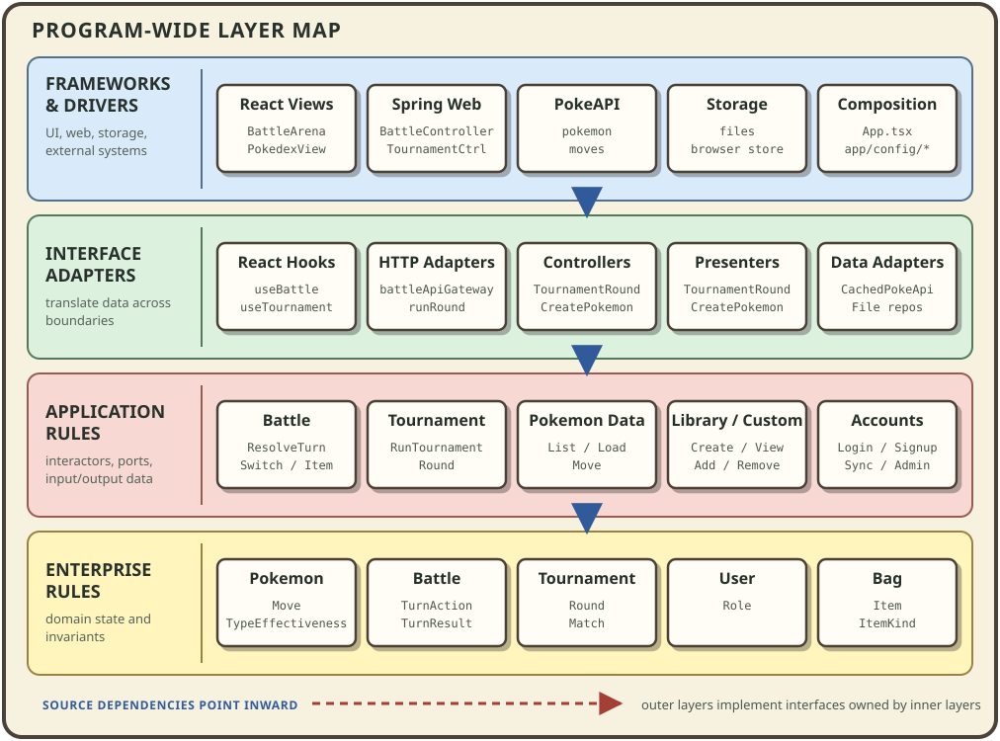
- The rubric's 5/5 band is "no violations of the Dependency Rule are evident" and "gone above and beyond to convince the audience". Offering commands a TA can run is the strongest form of convincing available.
- Describe the browser account authority and direct Pokédex route as outer-layer tradeoffs, not Dependency Rule violations. The executable checks show that neither leaks inward.
- The map is intentionally representative rather than exhaustive. It caps each layer at five groups while covering every major slice: battle, tournament, Pokémon data, library and custom Pokémon, and accounts.
- The blue arrows connect the outer layer bands to the inner ones. The dashed red callout summarizes the Dependency Rule: concrete outer code implements interfaces owned by the application business rules.
- Packaging is a hybrid of the lecture's package-by-layer and package-by-feature options.
The backend starts with
entity,use_case,interface_adapter,data_access, andapp; application actions then receive their own packages such astournament,resolve_turn, andsignup. The frontend similarly separatesdomain,usecases,hooks,services, andcomponents, with feature folders beneath the UI layer. - This is not pure package-by-component. The layer roots make the Dependency Rule easy to verify, while the named use-case packages make the program's application actions visible. Java subpackages provide organization, not inherited package-private access.
Overall design
SOLID, with the line of code that proves it
| Principle | Where | What it bought us |
|---|---|---|
| Single responsibility | RunTournamentRoundInteractor orchestrates · Tournament enforces bracket progression · RandomBattleRunner runs one match · TournamentRoundPresenter formats |
Four reasons to change, four classes. Changing the bracket rules never touches formatting. |
| Open/closed | TournamentMatchRunner, OpponentMoveSelector |
A new match policy or smarter AI is a new implementation; only composition wiring changes, not the Interactor. |
| Liskov substitution | RandomOpponentMoveSelector and every test stub behind MoveSelector |
Tests swap in a fixed selector and the interactor cannot tell. If it could, the abstraction would be wrong. |
| Interface segregation | ListPokemonDataAccessInterface, LoadPokemonDataAccessInterface, LoadMoveDataAccessInterface — three narrow interfaces, one implementation |
Each use case depends only on the methods it actually calls, so there is no god-object PokeApiService. |
| Dependency inversion | Every data access interface lives in use_case/; data_access/ implements it. On the frontend, usecases/ports.ts plays the same role. |
The entire test suite runs with stubs — no server, no network, no disk. |
Two rich examples, not five definitions
DIP + OCP: RunTournamentRoundInteractor owns
TournamentMatchRunner; production and test algorithms substitute behind it.
SRP + ISP: the PokeAPI adapter implements three client-shaped ports, while
mapping, caching, orchestration, and presentation each keep a separate reason to change.
- Rubric wants a rich discussion of at least two, not a shallow tour of five. The table is there so the audience can read it; you speak to two.
- For DIP, use the course wording: high-level policy depends on an abstraction it owns; outer details implement that abstraction. Then point to the deterministic tests as payoff.
Overall design
Patterns we implemented, and why each one
Strategy
OpponentMoveSelector · TournamentMatchRunner
Move choice and match policy are pluggable. A test injects a fixed selector; production injects the random one. Swapping in a smarter AI never touches the interactor.
Cache-aside
CachedPokeApiDataAccess wraps PokeApiClient
Read disk first, fall through to the network on a miss, then write back. This is the pattern not covered in lecture, and it gives repeatable demos without leaking caching into use cases.
Simple Factory
CreatePokemonFactory.create()
Hides construction and wiring of the Presenter, Interactor, and Controller. The web layer asks for one ready controller instead of knowing how that object graph is assembled.
Dependency Injection
TournamentConfiguration
Spring assembles the runner, repositories, Presenter, Executor, and boundaries at the composition root. Interactors receive collaborators; they never construct outer details.
Adapter
TournamentPokemonDataAccess
Presents the client-specific tournament port while delegating official names to the cached PokeAPI gateway and custom names to the owner-scoped repository.
Immutable value object
Bag
Consuming an item returns a new bag. A rejected turn can never leave a trainer short of a Potion, a rules bug cannot become a data-loss bug.
Extensibility, as a concrete scenario
"Make the opponent play well instead of at random." Write one class implementing
OpponentMoveSelector that scores each move against the defender's types, and register
it in BattleApiConfiguration. Nothing else changes: not ResolveTurnInteractor,
not Battle, not the controller, not the React app, not one existing test — because
every one of them already depends on the interface rather than the implementation.
- Strategy, Adapter, Simple Factory, and Dependency Injection use the names and intent from the course deck. Cache-aside is the appropriate extra pattern not presented in class.
- Do not call the cache a Proxy:
PokeApiClientdoes not implement the same port. Calling it Adapter plus cache-aside is precise and easier to defend. - The extensibility scenario is required for the Excellent band. Say it as a story, not a list.
Testing
634 tests, and the coverage report that backs them
325 tests · 77.32% branch
309 tests · 76.21% branch
both stacks
or a network call
What is covered
- Entities — damage, healing caps, type chart, party membership, win condition, bracket progression
- Interactors, every use case, driven by stand-in data sources
- Adapters — JSON mappers in both directions; controllers via MockMvc, which calls them without starting a server
- React — components, hooks, forms, and modal keyboard behaviour
- The dependency rule itself — ArchUnit in Java, which is a unit test that asserts which package is allowed to import which; an import test in TypeScript
Testing something random
Random, OpponentMoveSelector and the tournament
Executor are constructor parameters, not new calls
inside an interactor. Production passes the real thing; a test passes a fake:
new BattleSimulator(new SequenceRandom(0.5, 0.5))
A Random subclass that hands back those values in order,
so the crit roll and the accuracy roll are chosen by the test. It also
throws if the engine asks for more rolls than expected, so the number of
rolls a turn makes is fixed too.
What is not tested, and why
- Live PokéAPI calls. Tests use recorded JSON so the suite does not fail when the network does. Adapter error paths are covered; a real outage is not.
- The dev bearer token — the string the frontend sends to say who it is. It identifies a caller, but it is not cryptographically verified, so the suite makes no security claim about it.
One command reproduces all of it
.\scripts\verify.ps1It fails below the configured gates, so the numbers stay honest.
- The rubric wants evidence of coverage, not test counts — so lead with the percentages, not the 634. JaCoCo and Vitest coverage both run in CI and upload as artifacts; have one report open in a tab in case a grader asks to see it.
- We clear the Exceptional thresholds: use cases are 95.14% backend and 95.67% frontend; overall line coverage is 90.96% backend and 89.80% frontend.
- All figures were regenerated from current
mainon 2026-08-10 byscripts/verify.ps1: 309 Java tests plus 325 TypeScript tests equals 634. - "What is not tested, and why" is explicitly required at the Excellent band. Keep it.
Process
How code got into main
Feature work on named branches, merged through pull requests
Every branch is owner / feature, so the history reads as a list of slices:
dorothy/backend-tournament
yiming/library-api
albert/battle-message-and-plan
Nobody pushed to main.
Review the diff, and merge only once both CI jobs are green.
CI gates the merge
# .github/workflows/ci.yml — every PR, and main after a merge
frontend: npm ci → lint → test:coverage → build → audit
backend: ./mvnw -B clean verify
Lint is oxlint, the TypeScript linter. verify runs
Checkstyle (Java style), the tests, JaCoCo (measures how
much Java the tests reach) and ArchUnit (asserts the dependency direction).
Both jobs upload their reports as artifacts. A red job means the change is not merge-ready.
One pull request
#37 — fix(battle): keep the resolver's status message out of the arena
| Was | "Turn resolved. Arceus used Judgment!" |
| Now | "Arceus used Judgment!" |
An internal status string was leaking into player-facing copy. The fix narrates a resolved move from its events alone, while a switch or an item keeps its message — because "Go! Garchomp!" and "Pikachu recovered 20 HP!" are the copy.
Pinned by a regression test, so it cannot come back.
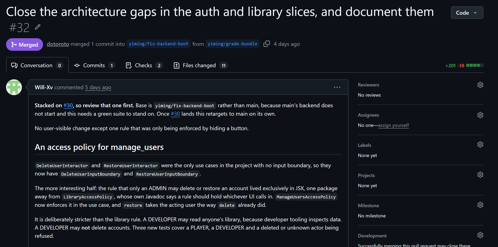
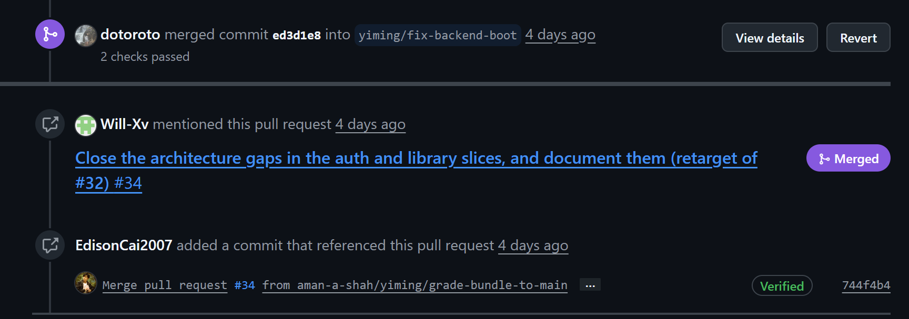
- Checkstyle is required for 4/5 or above on Code Quality, and it now runs on every push — say that out loud, it is a named tool in the rubric.
- If asked why the quality tooling landed late: it came in with PR #40, and PR #47 completed the use-case organization and documentation. Owning the sequence reads better than implying it was always there.
- The 5/5 band wants a pull request example — PR #37 is a genuinely good one because it is a real bug with a real fix and a regression test. Have it open in a tab.
- The screenshots show how the team handled dependent work. PR #32 states which pull request
must land first, explains why its temporary base is not
main, and records the retargeting plan instead of leaving that context in chat. - The timeline then shows the dependent pull request being merged with both automated checks passing. Describe this as evidence of documented merge order and CI gating; do not claim the screenshots show an approval, because this example records no reviewer approval.
Process
Layers at the top, one folder per application action
entity/ enterprise rules and domain services
use_case/
resolve_turn/ one application action per folder
switch_pokemon/ boundaries · data · Interactor
use_item/
tournament/
create_pokemon/
add_to_library/ remove_from_library/ view_library/
login/ signup/ register_elevated/
delete_user/ restore_user/ sync_account/
list_pokemon/ load_pokemon/ load_move/
list_custom_pokemon/ load_custom_pokemon/
interface_adapter/
tournament/ Controller · Presenter · View Models
create_pokemon/ Controller · Presenter · Factory
data_access/ files · HTTP · cache · mappers
app/web/ Spring delivery and wire DTOs
app/config/ composition rootsdomain/ battle · pokedex · tournament · typeChart
usecases/ battle · pokedex · tournament · ports.ts
services/ battleApi · pokedexApi · auth · library
hooks/ useBattle · usePokedex · useTournament
components/ battle/ pokedex/ tournament/ auth/ ...
App.tsx composition rootWhy it is organised this way
The top-level packages communicate Clean Architecture layers, so dependency
direction is visible and enforceable. Inside use_case/, every immediate folder is
one application action, which is the structure required by CAVE and introduced in PR #47.
Each action keeps its *InputBoundary, request/response data, and
*Interactor together. Shared contracts stay once at the application-layer root,
avoiding the responsibility duplication the final reorganization removed.
Naming
Java packages are lowercase with underscores throughout — use_case,
load_pokemon, register_elevated — matching the course convention
without exception. React components are PascalCase.tsx, everything else
camelCase.ts, tests in a __tests__/ folder beside what they test.
- Lead with the two-level rule: layers communicate dependency direction; action folders communicate responsibility. That is more accurate than calling the whole repo a vertical-slice layout.
- If asked why
interface_adapter/only has two packages: most adapters are Spring controllers underapp/web/. That is a real inconsistency — say so if asked, and note that tournament and create-Pokemon use the full Controller/Presenter/ViewModel treatment.
Accessibility
Universal Design, target users, and barriers
Universal Design principles we acted on
- Equitable use — guests and registered players reach the same core game; official, custom, and random Pokémon follow the same battle rules
- Flexibility in use — search or type-filter the catalog; hand-pick entrants or let random selection fill them
- Simple and intuitive use — consistent menu, setup, simulation, and result screens explain one next action at a time
- Perceptible information — HP is a number and a bar and a colour; effectiveness is stated in words, never colour alone
- Tolerance for error — an item that would do nothing cannot be submitted at all: the invalid target is disabled, and the server rejects it too
- Low physical effort — random filling, sticky selection controls, short menu paths, and no dragging or timed input
All seven are written up in docs/accessibility-report.md.
Target users
Casual and experienced Pokémon fans, students, families, friend groups, and coding clubs who enjoy matchups, collecting, customization, or learning from an interactive game system.
Who may be excluded by our choices
English-only text can discourage multilingual users; Pokémon terminology can exclude people unfamiliar with the franchise; and uncached data requires a modern browser and reliable internet, creating barriers for older devices and lower-connectivity communities.
In E3I terms, these are mismatches created by design, technology, and marketing choices, not deficiencies in those groups. Localization, offline catalog support, broader onboarding, and clearer privacy information would widen participation.
- The report exists —
docs/accessibility-report.mdcovers all seven principles as a general usability review, plus target audience and demographic barriers. - The Excellent band needs both target users and a struggling group discussed in the presentation, using E3I terminology. This slide does both — make sure whoever speaks actually says them aloud rather than pointing at the slide.
- Do not reduce accessibility to disability accommodations. Lead with broad Universal Design, then use the E3I framing that exclusion comes from mismatches created by our choices.
Runnable artifact
One documented path from clone to running app
git clone https://github.com/aman-a-shah/pokemon-battler.git
cd pokemon-battler
# terminal 1 — REST API on :8080
cd backend
.\mvnw.cmd spring-boot:run # ./mvnw on macOS/Linux
# terminal 2 — web app on :5173
cd frontend
npm ci
npm run dev
The Maven wrapper is committed, so the backend needs no separate Maven
install. The complete app needs Java 17 and Node 22. To verify everything instead of
running it: .\scripts\verify.ps1 from the root.
Then
Confirm http://localhost:8080/api/health returns
{"status":"ok"}, then open http://localhost:5173. No database to
provision, API key to register, or seed data to load. PokéAPI is public and unauthenticated,
and the first backend request for a Pokémon warms backend/cache/ for later use.
Configuration, all optional
VITE_API_BASE_URL | Point the web app at a backend other than localhost:8080 |
app.cors.allowed-origin | Allow an origin other than localhost:5173 |
Known launch issues, stated up front
- The backend must be running before you start a battle or a tournament — the arena resolves every turn against it
- Tournament state lives in memory and dies with the server; a battle lives in the browser and dies on refresh
- If PokéAPI is unreachable, anything already in
backend/cache/still works; anything else returns a502with a message
Verified final artifacts
verify.ps1 checks passed on current main on 2026-08-10. They produced the
executable Spring Boot JAR under backend/target/ and the production frontend
under frontend/dist/, after Checkstyle, tests, coverage, lint, build, and audit.
- Show the README on screen while saying this — the rubric explicitly wants setup instructions shown during the presentation.
- 5/5 wants a reproducible path. Show the root README, the health response, and the generated JAR/dist folders rather than only reading commands from the slide.
- The committed wrapper is worth one sentence: "you do not need Maven, just a JDK." That is the difference between a grader who can run it and one who gives up.
Wrap
What works, end to end, today
The full path a user can walk right now
- Sign up, log in, or continue as a guest, with roles gating what you see
- Browse 1,300+ Pokémon with their real stats and save favourites to a library
- Invent a Pokémon of your own and take it straight into a fight
- Fight a turn-based battle against the Java engine — moves, items, damage, fainting
- Run an eight-entrant knockout tournament down to a champion
Future work
- Persist active battles and tournaments across restarts
- Route the Pokédex through the backend cache
- Add localization and stronger screen-reader support
github.com/aman-a-shah/pokemon-battler
- Spend one minute summarizing the connected product and naming the next work in priority order.
- End by returning to the team user story, then move directly into Q&A.
Questions · 1 of 2
Q & A — architecture and data
Architecture
Where does a battle rule live, and how do you stop it leaking into the controller?
In entity and use_case.battle. BattleController only
translates — it rebuilds entities from the payload, calls an input boundary, and maps the result
back to JSON. It never decides anything.
Why an input boundary instead of just calling the interactor?
So the controller depends on an interface it could not have written, and the interactor can be swapped or stubbed. It is what makes the controller testable with MockMvc and no battle logic in the test.
The frontend has its own domain/ and usecases/. Is that duplicated logic?
Partly, and deliberately. The frontend checks the rules a player can already see — whose Pokémon has fainted, what is in the bag, so a pointless tap costs no round trip. The backend enforces the same rules and is the authority. If they disagree, the backend wins.
Why does the frontend call PokéAPI directly when you built GET /api/pokemon?
Honestly: the Pokédex was built before that endpoint existed and we have not migrated it. So
PokéAPI is reached two ways — cached through Java for battles and tournaments, directly from the
browser for browsing. It is the clearest piece of technical debt we have, the endpoint and its
cache are already built and tested, and the migration is confined to
services/pokedexApi.ts.
What happens if the client lies about the HP it sends?
Battle.resume() rejects states that could not have happened — HP above maximum,
negative HP, an active index outside the party, an HP list that does not match the party. It does
not stop a determined cheater; there is no authentication on that endpoint, and for a course
project we accepted that.
Is a stateless battle endpoint not just pushing state onto the client?
Yes, and that was the trade. The cost is that a refresh loses the battle. The benefit is that the API can restart mid-battle, and the tournament runs many battles without the server tracking any of them, which is why the tournament use case needed no new battle state at all.
Data and persistence
How is the data saved? Is there a database?
There is no database. Everything is JSON — on disk on the server, or in
localStorage in the browser.
| What | Where | Survives refresh? | Survives restart? |
|---|---|---|---|
| Battle in progress | React state | No | Yes — the server never had it |
| PokéAPI responses | backend/cache/*.json | n/a | Yes |
| Tournament in progress | Server memory | — | No |
| Users, roles, sessions | Browser localStorage | Yes | Yes — never touches the server |
| Per-user library | backend/data/*.json | Yes | Yes — one authoritative store |
| Users + libraries (Java copy) | backend/data/*.json | — | Yes, but the UI does not call it |
Why is auth implemented twice?
It was, and we fixed half of it. The library mirror is gone — trainer libraries now have one
authoritative backend store, and SyncAccount maps a browser session into an authorization
projection so that access policy stayed in Java. Accounts are still local to the browser,
behind ports the use cases own, which is why swapping in HTTP authentication is a composition change
rather than a rewrite.
What if PokéAPI is down?
Anything already in backend/cache/ still works. Anything else returns a
502 with a message. The battle itself needs no network — the client already holds both
Pokémon.
Why not use a database?
None of what we store is relational or concurrent, and all data access sits behind an interface owned by a use case, so swapping in JDBC is one new class and zero changes to any use case.
Are passwords stored safely?
On the Java side: PBKDF2, 100,000 iterations, a per-user salt, and it is tested. The
localStorage mirror matches those rules. Neither is a real auth system and we would not
ship either one.
- Everyone reads both Q&A slides before presenting. Nobody should need notes for the persistence question.
- Answer with the first sentence and stop. Over-explaining an honest gap turns a good answer into a bad one.
- Route questions to the person who owns that slice — it shows the split was real.
Questions · 2 of 2
Q & A — testing, design and process
Testing
How do you test something random?
We inject Random, OpponentMoveSelector and the tournament
Executor rather than constructing them inside interactors, so a test can pin the crit
roll, the accuracy roll, the opponent's choice and the thread of execution. Every turn test is
deterministic, that is the main reason the injection exists.
What is your coverage?
89.80% line on the frontend (325 tests, 77.32% branch) and 90.96% on the backend (309 tests, 76.21% branch), measured by Vitest and JaCoCo. Use cases are 95.67% and 95.14% respectively. Both gates fail the build if coverage drops, and CI uploads the reports as artifacts on every run.
What is not tested?
Live PokéAPI calls — tests run against recorded JSON on purpose, because a suite that fails when someone's Wi-Fi drops is a suite people stop trusting; adapter error paths are covered instead. Also: no automated screen-reader session, no visual regression, and nothing that claims the dev bearer token resists forgery.
Design
Give me one change your design makes easy that would otherwise be hard.
Making the opponent play well instead of at random. One new class implementing
OpponentMoveSelector, registered in BattleApiConfiguration. Not one line
changes in the interactor, the entities, the controller, the React app, or any existing test.
Is Bag being immutable not over-engineering?
It is three lines of discipline that make a class of bug impossible. Consuming an item returns a new bag, so a turn that gets rejected halfway through can never leave a trainer short of a Potion. A rules bug stays a rules bug instead of becoming a data-loss bug.
Which design pattern are you proudest of?
Strategy is the strongest course pattern: TournamentMatchRunner
separates the stable bracket algorithm from the varying one-match algorithm. The extra pattern is
cache-aside: CachedPokeApiDataAccess reads disk, fetches on a miss, and writes back,
while still adapting PokeAPI to use-case-owned ports.
Process and scope
How did you split the work?
Each person owned a feature from entity to screen, but the repository still
exposes Clean Architecture layers at the top. Within use_case/, PR #47 gives every
application action its own folder, so layer direction and responsibility are both easy to find.
What went wrong?
The frontend was built against localStorage and direct PokéAPI calls before the
backend endpoints existed. It let the UI ship early, but it left us with two implementations of auth
and library and two ways of reaching PokéAPI. We paid the library half back — it now has one
authoritative store — and the accounts half and the Pokédex are still outstanding.
How do you know nobody broke the dependency rule?
We do not rely on knowing. Five ArchUnit rules in Java assert that entities
depend on nothing, use cases never reach a gateway or a framework, interface adapters touch neither,
and web controllers cannot call a repository directly. Three equivalent import rules cover the
TypeScript side, including one that keeps localStorage out of domain and use-case code.
They run in CI, so a violation is a red build rather than something a reviewer has to catch.
You mentioned parties and switching — why didn't the demo show them?
Because the setup screen never builds a party bigger than one, so there is nothing on screen to
show. The engine has it: Battle models a party, SwitchPokemon is a
real use case with its own boundary, and all of it is tested. What is missing is one screen handing
the interactor three Pokémon instead of one — no entity, interactor or endpoint changes.
Why did you cut the sharing user story?
Sharing a result with friends needs hosting, public URLs and a permissions story, and buys almost no design depth in return. We cut it early to put that time into the tournament runner and the role system instead, both of which had real design decisions in them.
If you had two more weeks, what would you do?
Point the Pokédex at our own endpoint and delete the direct PokéAPI calls; wire the UI to the real auth and library endpoints; then add status conditions. In that order — the first two delete duplicate code, the last adds new surface.
- Everyone reads both Q&A slides before presenting. Nobody should need notes for the persistence question.
- Answer with the first sentence and stop. Over-explaining an honest gap turns a good answer into a bad one.
- Route questions to the person who owns that slice — it shows the split was real.